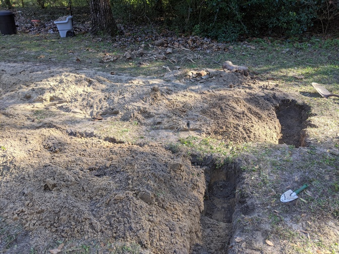
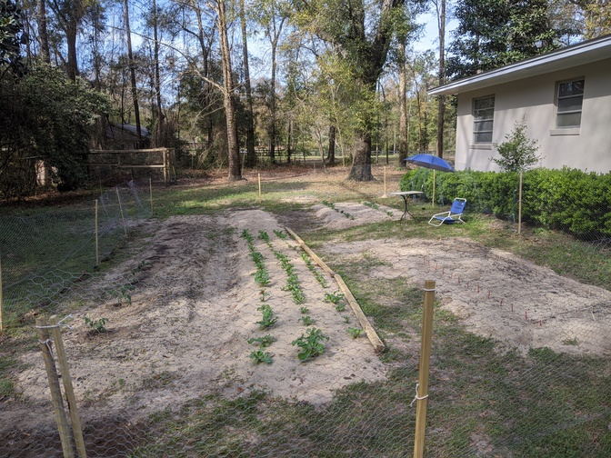
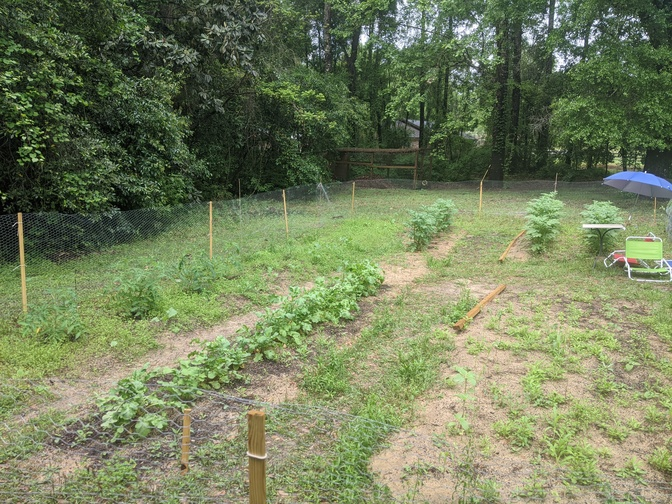
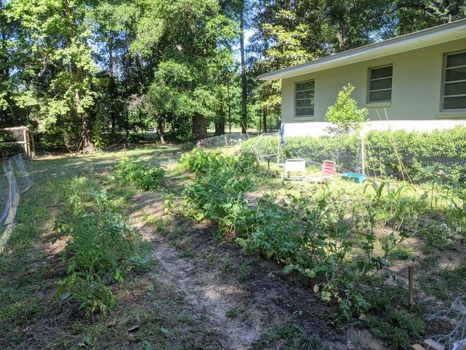
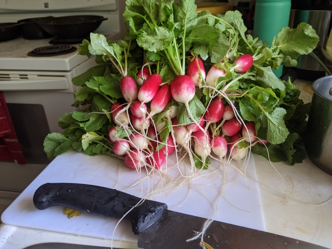
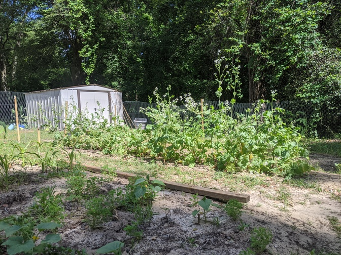
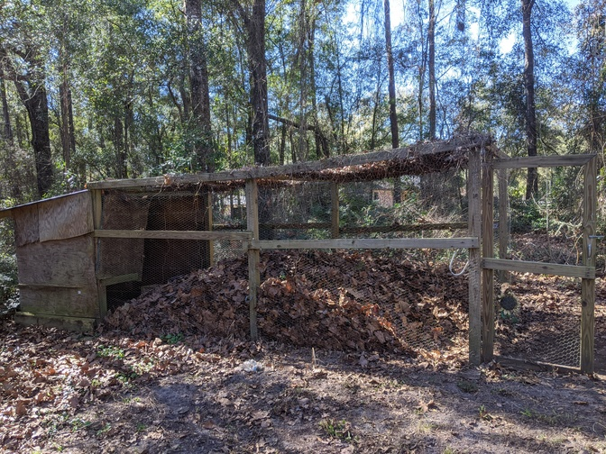
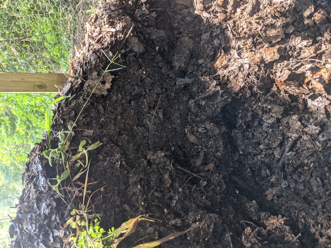
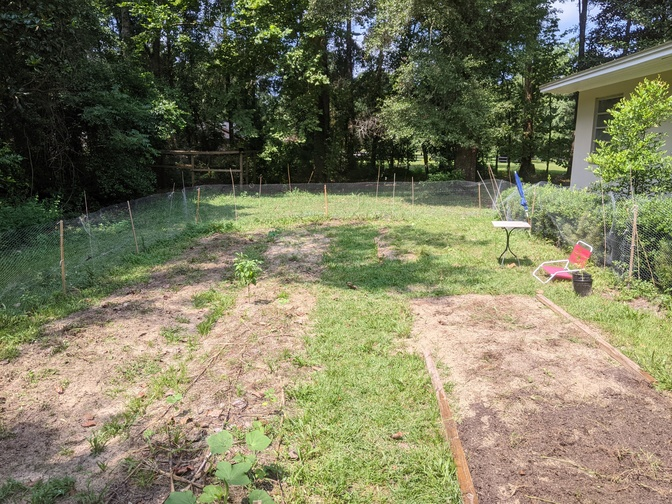
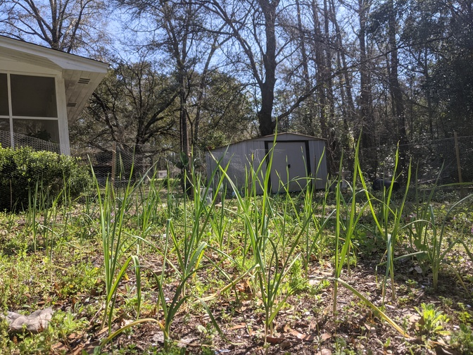

Garden Progress

The garden has come a long way since the double dig of the garden beds.

The soil has been disrupted from the double dig, but the warm season is on its way...

...progress...

...ooh la la! Tomatoes, potatoes, beans, radishes, cucumber, and corn in one shot.

The radishes did very well and produced multiple harvests such as this one.

The middle row of radishes went to seed for next year's planting...in style!

As the crops grow, the compost pile shrinks...

...until it is a fine black organic dirt ready for adding to the garden beds.

Look at the before and after of soil amendment!

How attractive does that dark soil look?

A new season warrants new crops. Garlic is well on its way...